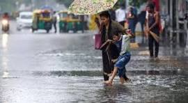

Regional Weather Alerts and Impacts
egional Weather and Rain AlertsChennai and Tamil Nadu: Localized sea breeze fronts and moisture from the west are triggering daily afternoon heat followed by evening or night thundershowers around Chennai and coastal Tamil Nadu. Temperatures in the city hover around a high of 36°C and a low of 29°C with scattered thunderstorm chances continuing through the week.Odisha and East India: A deep depression over the Bay of Bengal is causing torrential rains, forcing school closures in districts like Balasore, Bhadrak, and Mayurbhanj as rivers cross danger marks.Northwest and Central India: Delhi-NCR faced severe waterlogging and traffic disruption from intense downpours, prompting the India Meteorological Department to issue localized alerts. Heavy spells are also predicted for parts of Madhya Pradesh, Chhattisgarh, and Gujarat.Southern Peninsula: Despite r